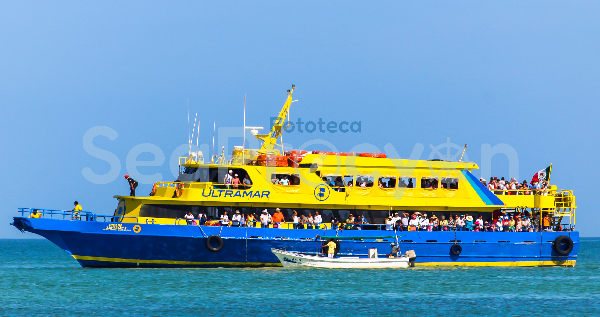
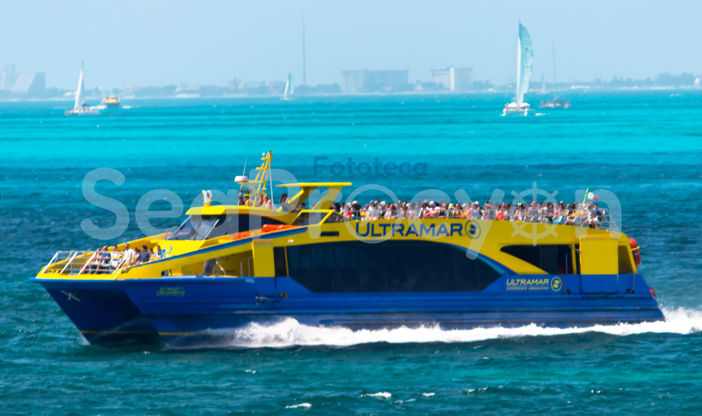
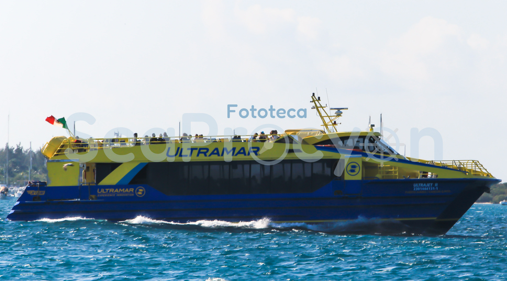
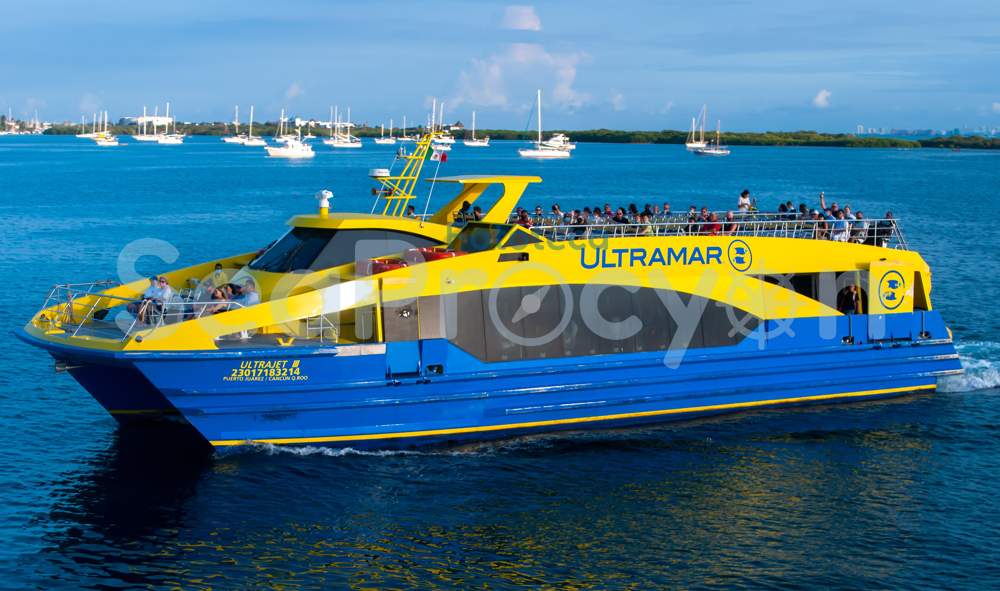

En 2003 se crea una nueva naviera hasta el día de hoy es la mas importante en la región, por lo tiene su sede en Puerto Juárez en la Terminal de Gran Puerto.
Inicio operaciones con el barco “Ultramar” en 2003, en Cozumel y Playa Del Carmen y también para la ruta Puerto Juárez.
Actualmente opera 3 rutas de o hasta Isla Mujeres y también la ruta Cozumel de o hasta Playa Del Carmen.
Opera desde 2003 al Presente
| Foto | Nombre del barco | Clase | No. de Matricula | IMO | Puerto de Registro | Astillero | Año de Construcción | Otros nombres | Estado de la Embarcacion | Ilustración | Observaciones |
|---|---|---|---|---|---|---|---|---|---|---|---|
|  | Piolin | -- | 2301532421-7 | 8693281 | Puerto Juarez, Quintana Roo (Cancún) | Gulf Craft | 1973 | Miss Belmar, Ocean Princess. Ultramar | Operativo | En Proceso | Originalmente era un barco de Pesca, modificado años depues como barco de tour por Aquaworld. |
|  | ULTRAJET I | JETLINE | 2301704621-2 | 8535879 | Puerto Juarez, Quintana Roo (Cancún) | Midship Marine Inc. | 2009 | Pearl Island I | En Reserva | Si | Se modifico años depues a un diseño similar a los Cityjet de la misma clase. Observado como Pearl Island. |
|  | ULTRAJET II | JETLINE | 2301444031-1 | 8535881 | Puerto Juarez, Quintana Roo (Cancún) | Midship Marine Inc. | 2009 | Pearl Island II | En Reserva | Si | Se modifico años depues a un diseño similar a los Cityjet de la misma clase. Observado como Pearl Island. |
|  | ULTRAJET III | JETLINE | 2301718321-4 | 8535893 | Puerto Juarez, Quintana Roo (Cancún) | Midship Marine Inc. | 2009 | Operativo | Si | Se modifico años depues a un diseño similar a los Cityjet de la misma clase. |